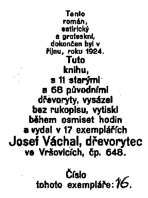

Josef Váchal: Krvavı román
Pokus o typ ideálního krvavého románu.
Název:
Mordıøská katovna aneb Peleš lotrovská v hrabìcí kryptì èi-li Mátoha a popravenec,
t.j. Tajní duchové na pirátské lodi, nebo-li Krvavá nohavice èi-li s poctivostí nejdál dojdeš, aneb Klášterní panna a nevìstinec ve Španìlích èi aláøní lucerna a tajemní vrahové v pustém mlınì u èerného lesa.
Kapitola III.
Mrtvola v komínì.
Opustme na chvíli omdlelou Marii a odeberme se opìt do ulic Barcelonskıch.
Je vlahá noc kteréhos májového veèera.
Ve sklepním obydlí veliké budovy sedìl sluha pitevního ústavu se svojí enou a pojídali veèeøi.
Pøed nimi stála plná butelka vína, z ní oba èas oba manelé dùkladnì si pøihıbali.
Z nedalekıch pitevních sálù vnikal do tohoto obydlí zápach z rozøezanıch nebotíkù, na kterı ale ten sluha i jeho ena byli u zvyklí a nic jim nepøekáel.
Na hodinách odbyla jedenáctá.
Bylo všade hrobové ticho. Jen ze sklepa ústavního ozıvalo se jednotvárné bubøení z nìkteré mrtvoly.
V tom bylo zaklepáno na dvéøe.
Manelka sluhy spìchala otevøíti.
Do dvéøí vstoupil obrovskı mnich, vlekoucí na zádech pytel.
Ten mnich, pokroèiv do svìtnice, odloil bøímì své a pozdravì tiše, vlídnì usedl.
Zdálo se, e bıvá tu èastım hostem.
Sluha nalil mu plnou sklenici vína, kterou ten mnich laènì vypil. Bylo vidìti, e nepohrdne dobrım truòkem.
Mnich ten, kterému Bruno budeme øíkati, byl kvardianem kláštera sv. Sulcipiciusa na druhém konci Barcelony. V tomto klášteøe rozdávala se kadého dne barcelonské chudinì o polednách vıteèná uzená polévka.
Hrobové ticho sklepního bytu v ústavu pitevním, rušené pouze mokvajícími mrtvolami, pøerušil posléze Kuba, tak se ten sluha jmenoval, následujícími slovy:
- „Do kdy to má bıt vyuzeno, velebnı pane? Èi u vám poslední maso došlo" –
„Vìc nespìchá, – odvìtil páter Bruno, – nesu vám ostatnì dnes jinou a dùleitìjší práci ne je uzení."
S tìmi slovy pøikroèil k tajemnému pytli v koutì stojícímu, kterı byl sebou pøinesl, a poloiv jej na stùl, poèal jej rozvazovati.
Kuba se enou mu v tom pomáhali.
Kdy ten pøedmìt byl obalu zbaven, obìvilo se tìlo pøekrásné panny.
Byla úplnì nahá.
Zdálo se, e je mrtva.
Dle bílého tìla a sepjatıch rukou soudì, byla to asi nìjaká jeptiška.
Na tìle nemìla jediné ranky.
Ten pytel byl zánovní a dle monogramu v rohu náleel klášteru sv. Sulciplciusa.
Páter Bruno vytáhnul ze své kleriky tìkı mìšec, poloil ho na stùl a øekl:
„Paní abatyše vám naøizuje, byste tuto naší v Pánu zesnulou sestru, jeptišku Agátku, v nìjaké kádi do líhu uloil, tak aby se tìlo její do pøíštího léta neporušené zachovalo, a mohla pak bıti co zázraènì uchovaná prohlášena za svatou. Tím vzejde klášteru od lidu vìøícího tuènı zisk a také vy budete spokojen s odmìnou."
Po tìchto slovech páter Bruno odešel.
Jakmile ten kvardián zmizel, také Kuba se zdvihl a odešel do ústavu pro líh k naloeni té mrtvoly.
Ve svìtnici zùstala jenom Kubova ena s tou mrtvou jeptiškou.
Náhle se jí zdálo, e se ta mrtvola hıbe,
Kubová si promnula zrak a pøihnula z láhve. Na to si sedla a poèla klímati.
Brzy se ozıvalo její hluèné chrápání.
Najednou ta mrtvá pootevøela oèi.
Poèala se kolem rozhlíeti kde asi je.
Ten zápach z mrtvol musel jí bıt pøíšernı.
Koneènì se jí podaøilo na stole se posaditi a rozhlédnouti se kolem sebe.
Hrùzou poèala se lomcovati, neb spatøila vedle sebe zbytek Kubovo nedojedené veèeøe: osmaené èlovìèí koleno a lidské ledvinky na paprice.
S ošklivostí se odtáhla od tìch pøíšernıch hodù.
V tom se znovu ulekla.
Byly to ty zvuky z mokvajících v pitevním sálu mrtvol, které my ji známe.
Plná hrùzy chtìla rychle utéci.
V tom zpozorovala, e nemá šaty.
Kam také utéci a jak, aby se ta spící babizna neprobudila?
Zrakem spoèinula na krbu, v nìm se netopilo, to byla jediná cesta k záchranì.
Nesmìla však ani minutu váhati.
–
Zatím ji byl Kuba nesl velikou káï, v ní jak víme ta jeptiška v líhu uloena bıti mìla.
Pøi tom asi vzpomìl, e by se mìl do udírny podívati, neb tam dlouho u nebyl.
Udírna nalézala se na pùdì pathologického ústavu a ádnı krom Kuby a jeho eny o ní nevìdìl.
Kuba tam udil mrtvoly z pathologie a prostøednictvím kvardiana Brùny dodával je klášteru sv. Sulcipiciusa, kde Bruno z nich vyváøel polévku.
Proto byla ta polívka pro chudı lid tak vıteèná, e masa na ní bylo dost a mnoho nestálo. V klášteøe ale o tom nevìdìli, e Bruno polévku z mrtvol vyváøí.
O zisk se dìlil ten pøíšernı kuchaø s Kubou; oba to strašlivé øemeslo provádìli nìkolik ji rokù.
Línì se pohybuje, dolezl Kuba na pùdu.
Právì u kraje v prvním komínì mìla viseti uzená mrtvola jedné eny, povìšená tam as pøed mìsícem.
Leè té mrtvoly tam více nebylo.
Kuba jal se jí horlivì hledati.
Tu mrtvolu musel nìkdo z komína ukrásti.
Náhle dostal Kuba ránu do hlavy klackem.
Bez dechu skácel se k zemi.
Kapitola XX.
Bitva s piráty.
Jsme opìt na Albatrusu, kde se vaøí grog.
Na to dal Rodriguez svolati všechny otroky a námoønictvo bez rozdílu vìku a pohlaví na palubu.
Všichni poèali s velikou laèností ten dobrı mok píti.
Nìkterım nováèkùm to pøíliš nechutnalo, neb ten grog docela nic sladkım nebyl.
Tehdy toti ještì cukr vynalezenı nebyl, neb poprvé se zaèal vaøiti v šestašedesáté válce z kostí mrtvıch Prušákù.
Kdy to páter Jgnác uhlídal, zelelo se mu tìch lidí, i vytáhl ze šosu nìjakı balíèek, kterı do toho grogu ponoøil.
V tom balíèku byly modlitby, pod názvem: Sladké nebeské království.
Skuteènì, hned tìm lidem grog sladèeji poèal chutnati a kuchaø musel vaøiti druhou várku
Záhy poèala ta lihovina kadého rozpalovati.
Bojechtivost sálala všem z oèí.
Nedoèkavì ji pøipravovali se na ty korsáry a dovaøení druhé porce grogu.
Náhle zavznìl z pirátské lodi vıstøel.
Padesáti liberní koule vrazila na palubu Albatrusa a smetla 10 námoøníkù do kotle s grogem.
Tomu kuchaøi ta koule utrhla obì ruce i nohy a odhodila jej pøes palubu do moøe. Na štìstí byl ten kuchaø vıbornım plavcem i podaøilo se mu se zachrániti.
Jeho zachránìní pøijato s velkım jásotem, nebo byla opìtná nadìje, e bude dále zas ten vıbornı grog vaøiti.
Zatím však ji ta korsárská loï se pøiblíila na 200 krokù k Albatrusovi.
Rodriguez pobíhal rozèilenì po palubì, k boji nabádaje.
Také ti jezuité nemeškali k hrdinému zápasu povzbuzovati, dávajíce pøedem zálohy na odpustky námoønictvu, které zatím horeènì na brusech brousilo sekyry a noe.
V tom pøiletìla z korsárské lodì druhá rozpálená koule a pøevrhla nádobu s lihem na grog, pøiberouc k tomu dva námoøníky.
Od té doby nebylo ji na vaøení grogu ni pomyšlení.
Korsáøi plnou silou najeli z boku na Albatrusa a uøízli svou pøídou mu zadek.
Ta zadní èást lodi hned se potopila.
Ve vlnách zmizelo kormidlo i s kormidelníkem, kterı nepøestal do své smrti si libovati, e si vzal dvojitou porci odpustkù a tudí e rovnou do nebe povandruje.
Ono mu sice, pravda, bylo drobet líto, e se té tøetí várky grogu nedoèkal, co však jiného šlo u dìlati, zvláštì kdy u ádnı líh nebyl.
Rodriguez dal na ty korsáry vypáliti pùl centu sekaného olova, ale nic to nepomáhalo.
Korsáøi se k Albatrusu zahákovali a pomocí prken pøebìhli na palubu.
Byli to strašní chlapové, nemytí a dávno u neholení.
Ve svıch rukách tøímali obrovské sekyry, jimi máchali kolem sebe jako zbìsilí.
Mustvo Albatrusa kladlo jim hrdinnı odpor, take jednu chvíli ji se zdálo, e zvítìzí.
Kapitán Rodriguez, na velícím mùstku stoje, s velikım zájmem sledoval prùbìh boje.
Jeho znaleckému oku neušlo, e ti piráti zápasí s daleko vìtši bojechtivostí.
Pøíèina vìzela asi v tom, e byli k tomu boji nìjakım silnìjším nápojem povzbuzeni.
Také skuteènì ti korsáøi daleko chrabøeji útoèili ne mustvo Rodriguezovo.
Takovı korsár na jedno máchnutí svou široèinou rozetnul svého protivníka vejpùlí jako hada veskrz na dvì stejné polovice a ještì pøibral dvìma jinım ruce i nohy.
Šplounající o ty lodì moøe bylo tìmi osekávanımi údy celé zkrvavìlé; èetné dravé ryby poíraly ty údy hned jak do vody dopadly velmi hltavì a s chutí.
Ty ryby mìly z toho radost, protoe ustaviènì vrtìly svımi ocasy.
Polovina mustva Albatrusu leela ji na palubì povradìna.
Také ti korsáøi utrpìli veliké ztráty; zejména to je hnìtlo nejvíce, e ta støíkající z Albatrusu krev jim uhasila na pirátské lodi oheò, na kterém se jim grog vaøil. Proto byli rozzuøeni do krajnosti a tím vztekleji bojovali.
Vítìzství také se sklonilo k pirátùm.
Rodriguez poèal pozdì litovati, e svému mustvu silnìjší grog neuvaøil, nebo jen od tohoto neøedìného nápoje korsárové své vítìzství táhli.
Na Albatrusu ji leelo tøi ètvrtì mustva decimováno.
Jen málo plavcù bylo ještì zpùsobilıch k dalšímu boji.
Chrabrı Rodriguez seznal, e pøišla jeho chvíle.
On musel z lodì co nejdøíve zmizeti, by od tìch korsárù rozsekán nebyl.
Proto poèal ze stìnì opatrnì slízati.
Ji se mu podaøilo dolézti na první ráhno, kdy spatøil pøed sebou obrovského èernocha s noem v ruce.
Rodriguez neztratil duchapøítomnosti a s hrdiností neobyèejnou chopiv jej pravou rukou za chøtán, druhou mu plivnul v tváø.

Váchal, Josef: Krvavı román, Paseka, Praha 1990
|